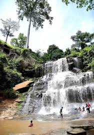
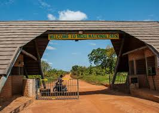

PLACES OF INTEREST IN GHANA:


CAPE COAST CASTLE

KAKUM NATIONAL PARK
located in the coastal environs of the Central Region of Ghana, covers an area of 375 square kilometres (145 sq mi). Established in 1931 as a reserve, it was gazetted as a national park only in 1992 after an initial survey of avifauna was conducted. The area is covered with tropical forest. The uniqueness of this park lies in the fact that it was established at the initiative of the local people and not by the State Department of wildlife who are responsible for wildlife preservation in Ghana. It is one of only 3 locations in Africa with a canopy walkway,[8] which is 350 metres (1,150 ft) long and connects seven tree tops which provides access to the forest.
KINTAMPO WATER FALL


KUMASI ZOO

LARBANGA MOSQUE

LAKE BOSOMTWE
MOLE NATIONAL PARK